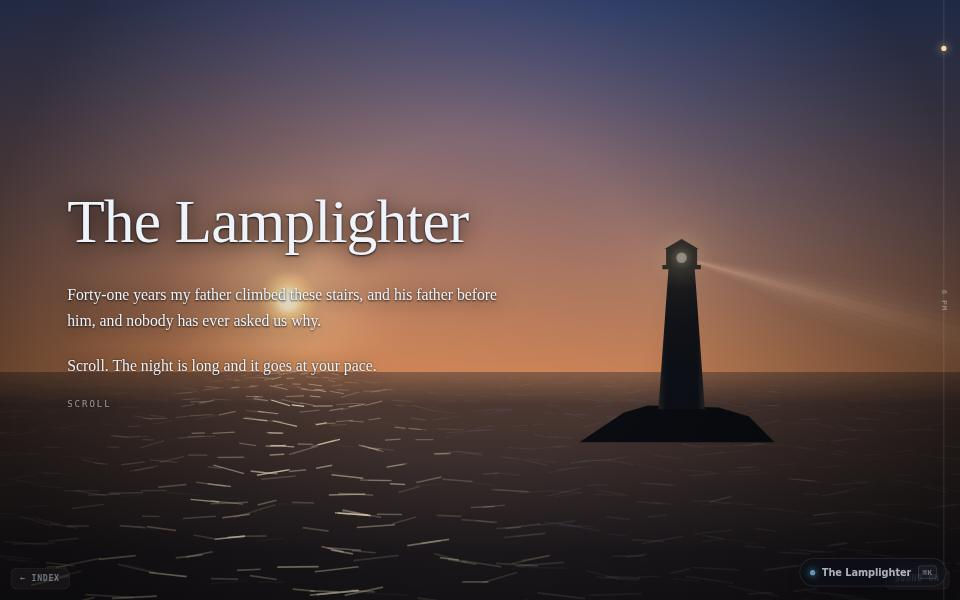

fiction · about 5 min · The Night Isles
The Lamplighter
One night, and a keeper about to be replaced by a machine. Scroll and the sun goes down, the gale gets up, and the light keeps turning.

The problem
Telling a story with a page that paints itself: the sun sets and the gale rises as you scroll.
What it does
- A five-minute illustrated story told by scrolling
- Sky, sea, rock and light drawn from scratch, with no image files
- Sound that follows the weather
The most interesting decision
Two clocks
The reader’s clock is the scroll bar; the lighthouse’s is wall time. The beam turns every 11.2 seconds whether or not anyone is reading, so the place goes on existing when you stop.
Built with
- Canvas 2D, no image files
- Scroll-driven scene
- Web Audio
Evidence
There is not an image file in its directory. The sky, the sea and the light are arithmetic. Read its tests
Its world
A lighthouse on its rock, the beam still turning, the last winter coming on.